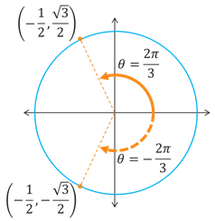

The Unit Circle
Trigonometric Functions
Trigonometric Functions
An identity is a statement that equates two things and is always true. So identities look like equations, but the key difference is than an identity is always true while an equation is only true for specific values, or solutions.
Example: Consider the statements \(2x + 3x = 5\) and \(2x + 3x = 5x\). Which is an identity and which is an equation?
The statement \(2x + 3x = 5\) is only true when \(x = 1\). It is false for every other value of \(x\). Therefore, \(2x + 3x = 5\) is an equation. You probably learned how to solve this way back in middle or high school.
The statement \(2x + 3x = 5x\) is always true, regardless of what numbers we plug in for \(x\). Therefore, \(2x + 3x = 5x\) is an identity. In fact, it is an example of the distributive property that you probably learned about when you were younger. Do you remember learning something like \(a(b+c) = ab + ac\)? That is the same thing. The distributive, associative, commutative, etc. properties are all examples of identities.
So just like the rest of math, there are a lot of properties and identities related to the trigonometric functions that we can learn about. For now, we will take a look at a few identities and leave the rest for later.
Let's start our exploration of identities by looking at three groups of identities, which we can call the fundamental identities. The fundamental identities include the Reciprocal Identities, Pythagorean Identities, and the Even-Odd Identities.

Consider the graph above. Do you remember how we defined our SOHCAHTOA relationships? The reciprocal identities arise from our original definition of the 6 trigonometric functions as the ratios of sides paired with a corresponding angle. If we flip the ratios for SOHCAHTOA, we will get the ratios for cosecant, secant, and cotangent.
Example: If \(\tan(\theta) = \sqrt{3}\), what is the value of \(\cot(\theta)\)?
What relationship do we have that involves both \(\tan(\theta)\) and \(\cot(\theta)\)? Use the appropriate reciprocal identity to find \(\cot(\theta)\) by plugging \(\sqrt{3}\) in for \(\tan(\theta)\).
\[\begin{align*} \cot(\theta) &= \frac{1}{\tan(\theta)} \\ \cot(\theta) &= \frac{1}{\sqrt{3}} \end{align*}\]If \(\tan(\theta) = \sqrt{3}\), then \(\cot(\theta) = \frac{1}{\sqrt{3}}\).
The Pythagorean Identities are the result of applying the Pythagorean Theorem to the following right triangle. If the length of the hypotenuse is 1, the length of the opposite side is \(y\), and the length of the adjacent side is \(x\), then by the Pythagorean Theorem we get \(x^2 + y^2 = 1\). If we subtitute \(\cos(\theta)\) for \(x\) and \(sin(\theta)\) for \(y\), then we get the first identity below. The other 2 identity equations are the result of applying the reciprocal identities.

Example: If \(\cos(\theta) = \frac{3}{5}\) for an angle \(\theta\) whose terminal side is in the 4th quadrant, what is the value of \(\sin(\theta)\)?
If we draw a right triangle with acute angle \(\theta\) and hypotenuse of 1 (within the unit circle), then the adjacent side is \(x = \cos(\theta) = \frac{3}{5}\) and the opposite side is \(y = \sin(\theta)\). Plug \(\frac{3}{5}\) into the \(\cos(\theta)\) part of the Pythagorean Identity and solve for \(\sin(\theta)\).
We know that \(\sin(\theta) < 0\) in the 4th quadrant, therefore we get \(\sin(\theta)=-\frac{4}{5}\).
The even-odd identities can be helpful at times, but are probably used the least of the fundamental identities. They are a result of the symmetry of the signs of the trig functions as we rotate around the unit circle in a counterclockwise versus a clockwise direction.
Example: Given that \(\cos\left(\frac{2\pi}{3}\right) = -\frac{1}{2}\), what is the value of \(\cos\left(-\frac{2\pi}{3}\right)\)?
The even-odd identity for cosine says that \(\cos(-\theta) = \cos(\theta)\), which means \(\cos\left(-\frac{2\pi}{3}\right) = \cos\left(\frac{2\pi}{3}\right)\). Therefore, \(\cos\left(-\frac{2\pi}{3}\right) = -\frac{1}{2}\).
The following graph illustrates why the even-odd property works for cosine. If we rotate counterclockwise or clockwise the same amount, say by \(\theta = \frac{3\pi}{2}\) or \(\theta = -\frac{3\pi}{2}\) in this example, then the resulting terminal points have the same x-coordinate. So in general, whether we have a positive rotation or negative rotation, or a positive terminal number or negative terminal number, the results for \(\cos(\theta)\) and \(\cos(-\theta)\) are the same.
©2024 M4thG33x (new window) Some Rights Reserved.